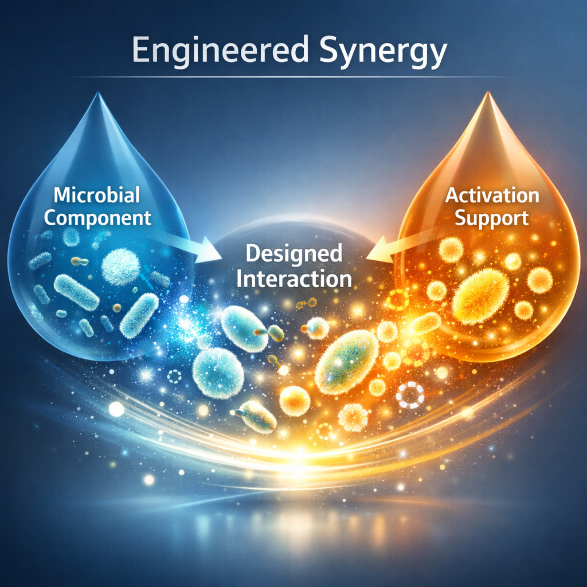

Microvate™ is Kriya's precision activation platform for microbial systems that are designed to remain protected during storage and become functionally ready only at the point of use. It separates storage stability from biological readiness through a controlled activation architecture.
Microvate™ is the biological readiness layer of the Kriya stack and is restricted to microbial systems. It is built around a dual-component logic in which the microbial active remains protected during storage while an activation-support system remains separate until needed. Microvate™ does not focus on microbial discovery and does not replace Karyo™'s broader delivery role. Its function is to control when and how the microbial system becomes ready.

Microvate™ is built on a powerful principle: stability and activation should not be forced to happen in the same state. By separating protected storage from activation readiness, the platform creates a more controlled transition from biological preservation to biological performance.
Six integrated capability pillars that take microbial readiness from protected storage to field-ready performance.
The microbial active and the activation-support system are kept separate to reduce storage-phase compromise.
The microbial component remains in a protected state during storage and transport.
Activation is triggered only when the system is prepared for application.
The platform controls the transition from protected state to functionally ready state.
The system supports purposeful interaction between the microbial component and the activation-support component.
The platform is designed to improve field-relevant expression during the use phase.
Microvate™ distinguishes between stable storage state and active use state rather than forcing both into one condition.
Activation is controlled and intentional, not passive or assumed.
The separated architecture can reduce premature interaction during warehousing and transport.
Microvate™ allows the microbial system and activation-support logic to interact only when needed.
Microvate™ is not just a two-part system. It is a readiness architecture for advanced microbial products.


The potential of Microvate™ lies in redefining how microbial products transition from storage stability to functional performance. It can support activation-led biological systems, premium dual-component microbial products, controlled readiness architectures, and a differentiated future category within microbial agriculture.
Microvate™ gives Kriya a differentiated story around biological readiness. It helps explain how microbial systems can remain protected during storage and become deliberately active only when performance is needed.
Partner with Kriya to bring Microvate™-enabled biological systems to market.